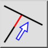
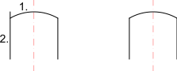

This is an automatic translation.
Obrezivanje
Toolbar / Icon:


Menu: Izmjena > Obrezivanje
Shortcuts: R, M | X, T
Commands: trim | extend | rm | xt
Description
Obrezuje ili produljuje liniju, luk ili elipsu do drugog entiteta.
Usage
- Odaberite granični entitet do kojeg želite obrezati ili produljiti jedan ili više drugih entiteta.
- Odaberite entitete koje želite obrezati do graničnog entiteta. Često postoje dvije mogućnosti za entitet koji se obrezuje. U primjeru u nastavku možda želite da gornji dio linije ostane u crtežu, a donji dio da se obreže. U tom biste slučaju trebali kliknuti entitet za obrezivanje na gornjem dijelu. Uvijek kliknite onaj dio entiteta koji želite zadržati.

- Kliknite dvaput desnom tipkom ili pritisnite Escape dvaput za završetak alata.